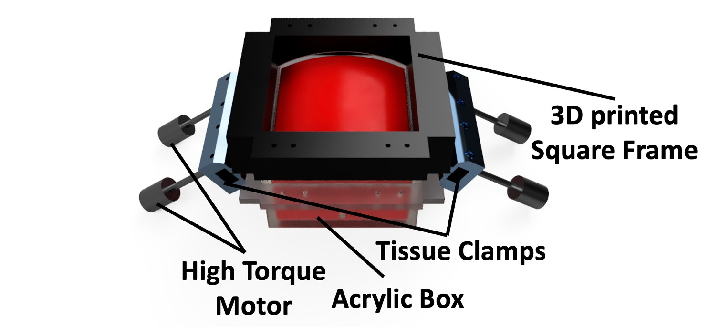
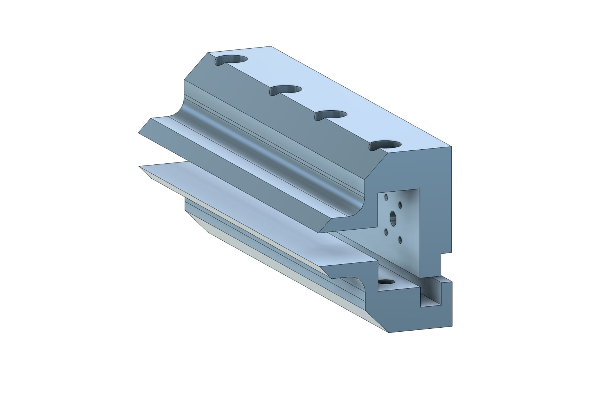
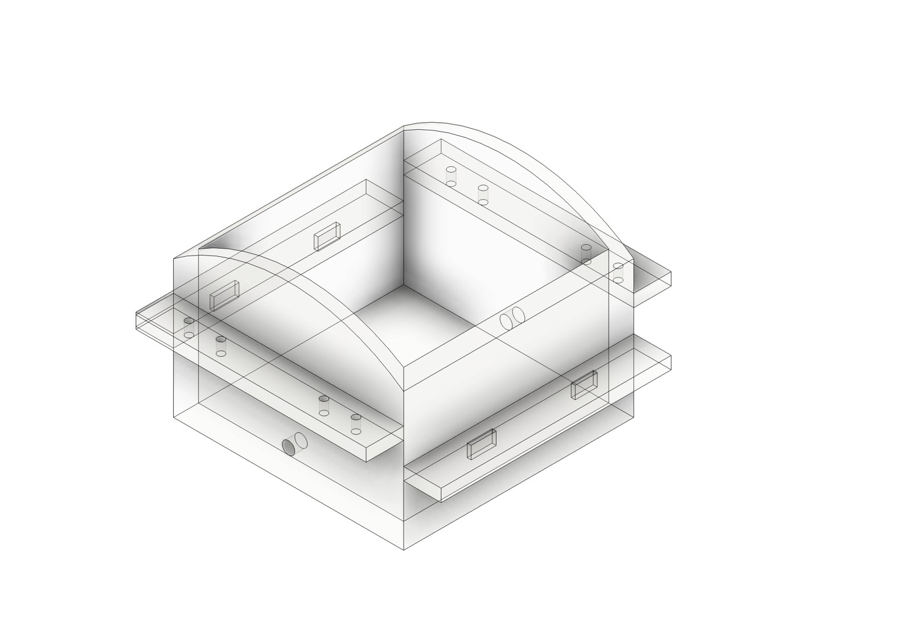
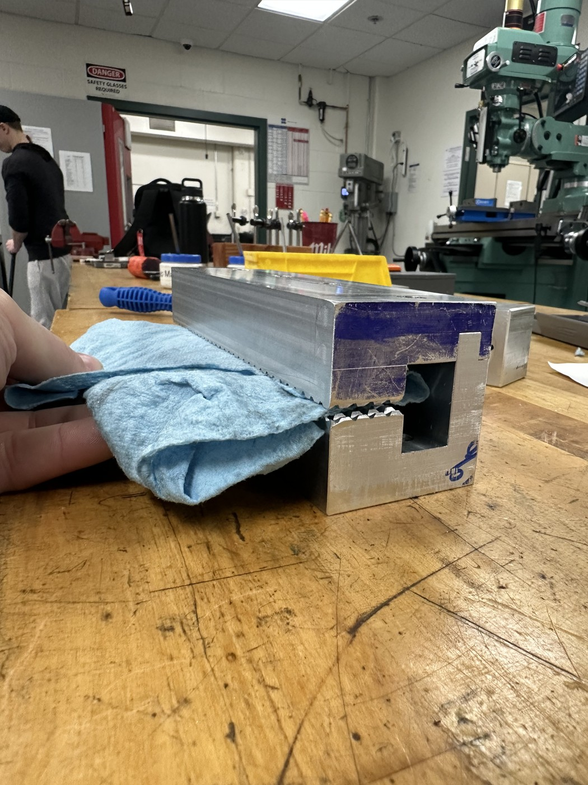

Continued development of a dynamic tissue-testing platform for hernia-mesh research.
Role
Research & system development
Context / status
July 2025–present · Ongoing
Tools & methods
Mechanical integration · Pneumatics · Python · Pressure sensing · Test systems

The original assembly architecture, reproduced from the April 2025 team report.
01
Overview
Hernia mesh reinforces weakened abdominal-wall tissue. In use, that repair experiences changing loads from activities such as breathing and coughing. A single static loading condition cannot describe every part of that mechanical environment.
MeshAlyzer was developed as a laboratory platform to apply controlled, time-varying loading to samples held over an inflatable balloon. The aim is to support comparisons of mesh and fixation configurations under repeatable conditions. It is a research apparatus, rather than a clinical diagnostic device.
02
My contribution
My work focuses on understanding the inherited apparatus, restoring its operation, and improving the mechanical, sensing, and software interfaces that support experiments. This involves both hands-on hardware work and tracing how the existing code, electronics, and pneumatic components interact.
01
System review & recommissioning
I brought the platform back up and reviewed its architecture, including the Raspberry Pi setup, pressure-sensing workflow, and hardware connections. Taking over the system required understanding what each part did before deciding what to change.
02
Pressure sensing & Python troubleshooting
I have been investigating the pressure-reading script and sensor connections so that recorded data can be interpreted alongside what the pneumatic hardware is doing. This work involves tracing problems across software and hardware rather than treating a sensor value in isolation.
03
Balloon reliability & test readiness
I identified a balloon leak and coordinated with the previous developers about repair and replacement options. Addressing the leak is a prerequisite for dependable loading, so it became a priority before further testing.
04
Mechanical integration & access
My work has included camera mounting and clamp-related improvements. I am also developing plans for a handled polycarbonate mounting plate to organize the electronics, improve access, and support cleaner wiring. The plate and rewiring are development work, rather than a completed redesign.
05
Files, documentation & continuity
I have been organizing files across the Raspberry Pis and reviewing the project repository to make the existing software easier to understand and maintain. The goal is to leave a system that another researcher can inspect, troubleshoot, and operate more consistently.
03
Design & development
System architecture
The platform brings together a restrained balloon, motorized clamps, pneumatic valves, pressure transducers, and a software interface. Each subsystem affects the experiment: the balloon transfers the load, the clamps establish the sample’s boundary conditions, and the sensors record the pressure response.
01 / SAMPLE FIXTURE
Sample restraint
Machined aluminum clamps hold the sample. Motors and lead screws move the clamps to establish extension before loading.
02 / LOAD APPLICATION
Balloon loading
A polyurethane balloon sits inside the test chamber. Its expansion presses against the sample supported above it.
03 / PNEUMATIC CONTROL
Pneumatic control
Regulated compressed air, solenoid valves, and vacuum connections provide pathways for inflation and deflation.
04 / MEASUREMENT
Pressure measurement
Three pressure transducers monitor the supply and output lines. The interface supports manual controls, protocol execution, and data viewing.
Original pressure-system layout. This figure documents the earlier prototype configuration, not a newly built layout of my own.
1PrepareMount the sample and establish its restraint.
2LoadApply a controlled inflation/deflation sequence.
3ObserveRecord pressure and investigate sample deformation.

Original tissue-clamp design.

Original acrylic chamber geometry.
Original prototype and test evidence
The original MeshAlyzer system was developed by Cole Hanan, Alexander Gadin, and Evan Maples for their 2025 BME senior design project with Dr. Spencer Lake. Their final report documents the mechanical design, pressure system, interface, verification work, and remaining development needs. I joined after that project and am building on their work.
What the April 2025 report establishes
Preliminary clamp tests used cloth substitutes spanning the target sample-thickness range.
The report describes maintaining 10% extension for eight hours in those cloth tests.
Loading and unloading trials averaged approximately 3 minutes 26 seconds across ten trials.
Pressure regulation, balloon durability, biological testing, and aspects of environmental verification still needed further work.
The report contains differing statements about pressure-control accuracy and which pressure tests passed. I treat it as documentation of an early prototype rather than proof that every target was achieved. Cloth tests also do not establish the behavior of repaired biological tissue.

Original prototype work with a cloth substitute. Photograph credited to the 2025 development team.
04
Results & next steps
Brought the inherited platform back up, reviewed the control and sensing architecture, and identified a balloon leak that needs to be resolved before further loading tests. Pressure-sensor troubleshooting and electronics-layout work remain in progress.
Next priorities are balloon repair or replacement, sensor checks, fixture and restraint improvements, and preparation for repeatable tissue tests.
Project credit
Original system and report imagery: Cole Hanan, Alexander Gadin, and Evan Maples, The MeshAlyzer: Final Report, BME 401 Group 26, April 18, 2025. My contributions describe subsequent work in WashU’s Musculoskeletal Soft Tissue Lab. The images on this page show the original team’s apparatus.